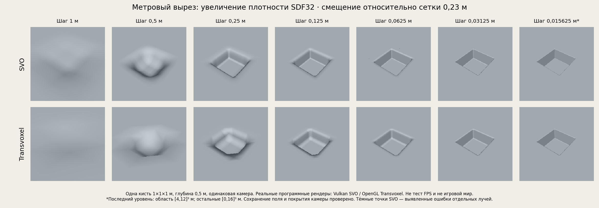
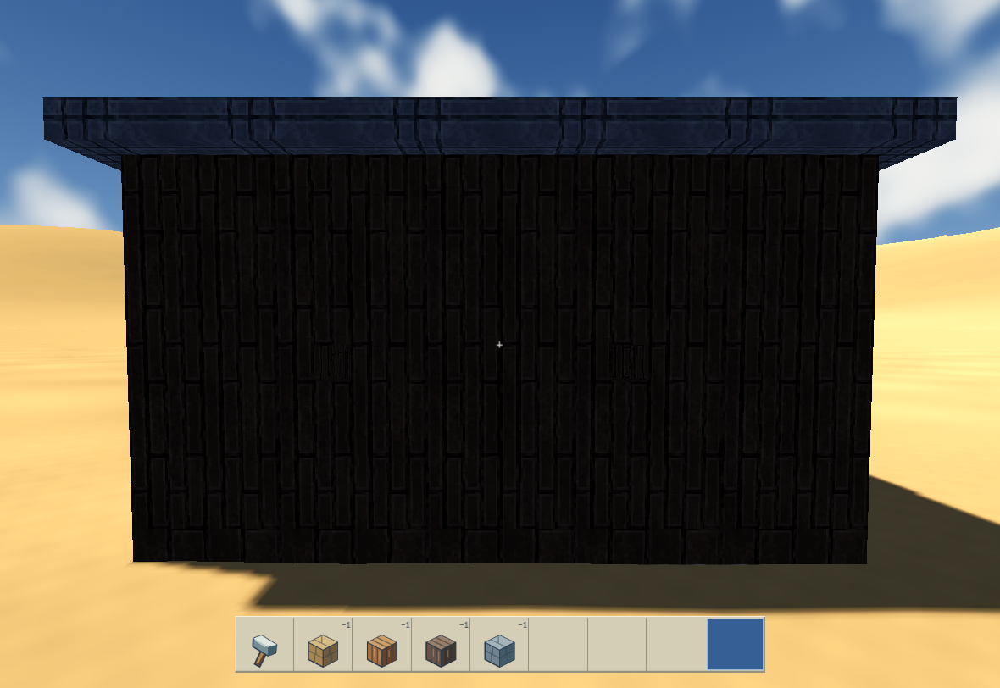
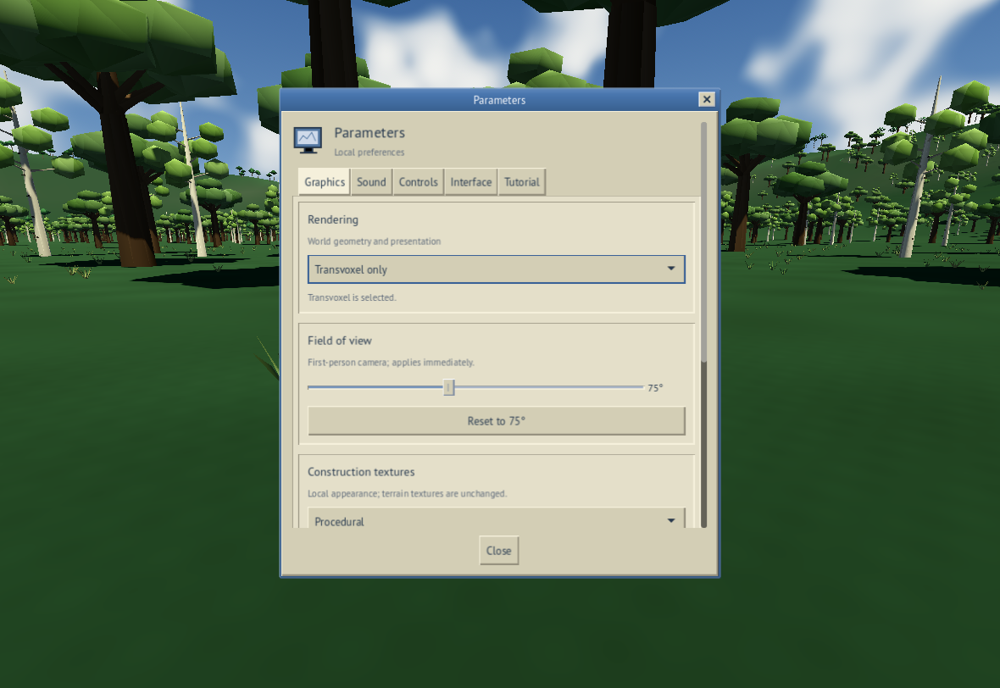
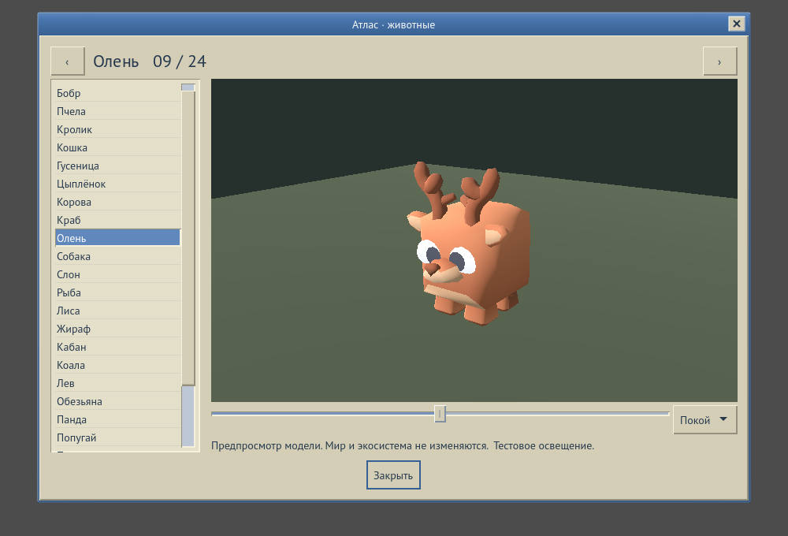

Мир, который не заканчивается за кадром
Zeitgeist — native-песочница вокруг изменяемого воксельного мира. В её основе простая игровая идея: место, которое вы увидели, раскопали или застроили, должно оставаться тем же самым местом после ухода и возвращения. Планета здесь задаёт масштаб, а инструменты игрока — возможность вмешаться в её устройство.
Но за такой формулировкой скрывается несколько разных задач. Рельеф нужно сгенерировать, сохранить изменения, загрузить нужную область, показать её с подходящей детализацией, согласовать столкновения и строительство, а затем повторить всё это для другого участника сетевого сеанса. Красивый неподвижный ландшафт закрывает только небольшую часть этой работы.
Проект развивается как играбельная версия разработки и набор параллельных инженерных экспериментов. Уже можно создавать мир, перемещаться, менять рельеф и строить. Одновременно проверяются новые пути рендера, контракты воды и способы представить сложные системы через понятный интерфейс. Ниже — разбор того, из каких частей складывается эта работа и где проходит граница проверенного результата.
Одна планета, несколько масштабов
Локальный вид, региональный обзор и глобус решают разные задачи. Вблизи важны форма выреза, опора под ногами и точное положение строительной детали. Издалека важнее непрерывность ландшафта и узнаваемость крупных форм. Переключение масштаба не должно создавать другой мир с похожим внешним видом.
Координаты, загрузка и идентичность
Поэтому значительная часть разработки находится между видимыми системами: преобразования координат, принадлежность данных конкретному миру, жизненный цикл загружаемых областей и момент, когда результат можно передать отображению. Пока камера движется, старый запрос может завершиться уже после нового. Без проверки владельца и актуальности такой ответ способен вернуть на экран устаревшее состояние.
Такие ошибки редко выглядят как отдельная большая поломка. Это может быть исчезнувшая правка, участок, который появился слишком рано, или неподходящий результат после повторного входа в мир. Поэтому проверки охватывают не только первый запуск, но и смену области, повторную загрузку и закрытие ещё не завершившихся операций.
Что на самом деле означает «точность рельефа»
В используемом представлении SDF поверхность задаётся полем расстояний со знаком. Нулевой уровень отделяет внутреннюю область от внешней. Рендеру приходится восстановить видимую поверхность по значениям этого поля, а результат зависит и от данных, и от выбранного способа восстановления.
Важно различать разрядность значения и пространственный шаг. SDF32 обозначает 32-битные значения поля. Шаг 0,25 м означает расстояние между соседними отсчётами. Переход к float32 не добавляет отсутствующие отсчёты между узлами редкой сетки. И наоборот: плотная сетка сама по себе не исправляет ошибку обхода луча или неправильный переход между уровнями детализации.
Один вырез, семь пространственных шагов
Чтобы увидеть разницу, проведено контролируемое сравнение: одна кубическая кисть размером 1 × 1 × 1 м, видимая глубина 0,5 м, одна камера и смещение относительно сетки 0,23 м. Пространственный шаг уменьшается от 1 м до 0,015625 м. На грубой сетке геометрия выреза заметно сглаживается. При уплотнении данных оба исследуемых пути лучше сохраняют форму.

В этом сравнении SVO визуально лучше удерживает некоторые границы, но из одного кадра нельзя вывести универсальное превосходство алгоритма. У сохранённой реализации SVO выявлены ошибки отдельных лучей: тёмные точки на изображении — часть результата проверки. Самый мелкий шаг также использует меньшую область данных: [4,12]³ м вместо [0,16]³ м. Эти условия важны для честного чтения картинки.
Как читать этот эксперимент
SVO в этой таблице — сохранённая лабораторная реализация SurfaceLab. Аппаратный игровой путь следующего раздела отличается. Два самых плотных поля подготовлены ускоренным, проверенным по байтам эквивалентным вычислением выражения поля, а не непосредственным исполнением всей цепочки GDScript/VoxelBuffer. Сравнение иллюстрирует влияние плотности SDF и конкретных реализаций. Оно не измеряет скорость реального оборудования, не устанавливает глобальную границу ошибки поверхности и не доказывает отсутствие артефактов в игре.
Зачем проекту два пути рендера
Transvoxel: поверхность как сетка треугольников
Обычный путь разработки строит геометрию рельефа по воксельным данным и использует Transvoxel для согласования участков разной детализации. Это позволяет передать поверхность привычному графическому конвейеру. Важная часть задачи — переходные ячейки между соседними уровнями: без согласования на таких границах могут появляться трещины.
Transvoxel — Eric Lengyel / official algorithm overview ↗
SVO: иерархия данных и поиск поверхности лучом
Экспериментальный путь использует разреженное воксельное октодерево. Пространство организуется иерархически, чтобы не обходить всё с одинаковой детализацией. Но само наличие дерева ещё не определяет точность изображения. Отдельно нужно корректно найти пересечение с поверхностью поля, выбрать подходящие данные, вычислить нормаль и записать глубину, совместимую с остальной сценой.
Поэтому SVO не сводится к замене одного материала. В игровом мире ему нужны обновления после редактирования, устойчивый выбор данных при движении камеры, контроль памяти и согласование с освещением. Даже если отдельный тестовый куб выглядит правильно, из этого ещё не следует, что весь движущийся мир будет отрисован правильно.
Детализация SVO и детализация входных данных
Цель иерархии — выбирать достаточную детализацию для изображения. Однако дерево не может восстановить детали, которых нет во входном поле. Нельзя считать, что весь мир уже предоставляется ему в LOD0 на любой дальности. В текущем аппаратном эксперименте есть собственный выбор листьев SVO, а глобальная цель ошибки в два пикселя ещё не выполнена.
При проверенном перемещении камеры набор менялся со 141 листа с ближним LOD0 на 113 листьев с ближним LOD4, а затем возвращался к 141/LOD0. Это подтверждает конкретный сценарий перестройки набора. Полное покрытие, качество дальних областей и устойчивость всех траекторий требуют дальнейшей проверки.
SVO уже рисует настоящий игровой мир
АППАРАТНЫЙ ЭКСПЕРИМЕНТГлавный переход в этой работе — от отдельной лабораторной сцены к реальному миру игры. Аппаратная проверка выполнена на RTX 4060 Laptop в разрешении 1920 × 1080, через Vulkan Forward+. На первом кадре статьи показан именно этот запуск: рельеф, камера, игровой инструмент и интерфейс присутствуют одновременно.
В этом кадре ближайший уровень данных имеет шаг 0,5 м, включены исходные солнечные тени. Изображение остаётся диагностическим: оно показывает работоспособность конкретного пути в игровом окружении, но не финальный художественный вид. Тесты красоты рельефа с более плотным SDF и аппаратные проверки SVO — разные наборы условий.
Ускорение, которое ещё нельзя считать принятым
Одна из проверяемых оптимизаций сокращает повторные чтения неизменных метаданных листа. На остановленном диагностическом срезе медианное GPU-время с тенями уменьшилось примерно с 1244 до 1095 мс — около 12%. Это полезное направление, но абсолютное время всё ещё очень велико. Данные не являются обещанием игрового FPS.
Проверка эквивалентности также не завершена. Один повтор базовой версии дал небольшое, но массовое расхождение значений глубины; следующий повтор совпал с предыдущими сериями. Причина выброса остаётся открытой. В выбранной верхней области маски попадания совпадают, но в полнокадровых контрольных проходах есть изменившиеся пиксели попадания/пустоты. Поэтому заявление «всё побитово одинаково» было бы неверным.
Следующий рубеж — совместить точность, покрытие, движение камеры, глубину, освещение и приемлемое время кадра в одном проверенном игровом сценарии. Успех отдельной оптимизации не заменяет эту проверку.
Построить, изменить, сохранить, вернуться
Инструменты мира должны работать с реальным состоянием. Игрок может выкапывать, заполнять и выравнивать рельеф, размещать строительные материалы и пользоваться редактируемыми шаблонами. Строительство с шагом четверть метра позволяет перейти от крупной формы к отдельной детали. Однако точность строительной сетки не следует путать с разрешением всего ландшафта.
Один жест затрагивает несколько систем
Копание под собой и размещение блока рядом с собой требуют разных правил. При выемке земли игрок может потерять опору. При добавлении твёрдого материала нельзя создать объём внутри персонажа. Проверки размещения используют положение игрока и пересечение с будущей геометрией; после изменения должны обновиться столкновения и сохраняемое состояние.
Проверены обычные маршруты копания под ногами и наращивания блоков прыжком. Отдельно исследуется, как сохраняются материалы на фрагментах после вырезания. Если одна стенка разбивается на несколько частей, текстура не должна неожиданно сменить масштаб или начать жить в другой системе координат.

Эта пара кадров получена 18 октября 2026 года в настоящем игровом мире через программный сценарий проверки. Это вырезы в постройке, а не демонстрация копания земли. Геометрия фрагментов и положение игрока восстановлены после повторного открытия. Совпадение пикселей проверялось в выбранных масках оставшихся частей стены, а не по всему кадру.
Предмет должен принадлежать игроку
Инвентарь — тоже часть состояния мира, а не только набор иконок. В обычном одиночном маршруте работают перенос предмета курсором, панель быстрого доступа, выбрасывание и автоматический подбор. Повторный запуск должен сохранить результат, не выдавая предмет ещё раз. Эта же принадлежность становится критичной при появлении нескольких участников.
Мультиплеер: согласовать действия, а не только позиции
ВЕТКА РАЗРАБОТКИ / ОГРАНИЧЕННЫЕ СЦЕНАРИИВ текущей ветке разработки есть Host/Join с авторитетным хостом. Хост отвечает за состояние мира, симуляцию, столкновения, проверку действий и сохранение. Гость передаёт ввод и намерения, а получает подтверждённый результат. Это особенно важно для строительства и ресурсов: клиент не должен самостоятельно объявлять, что изменил мир или получил предмет.
Проверки уже включают хост и двух одновременных гостей в отдельных процессах. Гости перемещались, получали изменения рельефа и строительства, выполняли операции с предметами. Один отключался и подключался повторно, пока второй оставался в сеансе. Состояние каждого участника проверялось отдельно от инвентаря хоста.
Почему дерево рядом с гостем — отдельная задача
Если создавать столкновения только вокруг хоста, удалившийся гость может видеть дерево, но проходить сквозь него. Поэтому авторитетная область должна учитывать допущенных участников. Когда один гость уходит, можно освободить ненужные ему участки, но нельзя удалить объекты, всё ещё нужные другому. Проверен именно такой сценарий с двумя гостями.
Другой маршрут связан с расчисткой дерева и выдачей древесины. Повтор того же сообщения не должен давать вторую награду. Проверяются сама расчистка, однократное начисление, повтор операции и возвращение участника. После корректного завершения процессов и нового открытия мира очищенное дерево остаётся очищенным, а состояния участников согласуются.
Граница проверки: основной многопользовательский сценарий выполнен через loopback на одном компьютере. Это ещё не подтверждение качества интернет-соединения, защищённой публичной аутентификации или восстановления после отключения питания во время записи. Отдельный тест аварийного завершения хоста выполнялся после уже завершённого сохранения.
Вода начинается с сохранения объёма
ЭКСПЕРИМЕНТАЛЬНАЯ СИСТЕМАДля воды недостаточно нарисовать отражающую поверхность. Нужно решить, сколько воды находится в области, куда она может перейти и что произойдёт, если игрок построит стену или выкопает яму. Новая геометрия меняет доступную вместимость, но не должна незаметно создавать или уничтожать жидкость.
В отдельном эксперименте реализованы консервативные переносы между соседними ячейками и конечные источники. Операции проверяют вместимость, известность данных и актуальность состояния. Несовместимый запрос должен отклоняться, сохраняя прежнее состояние. Повтор запроса не должен повторно расходовать источник или выдавать дополнительный объём.
Рельеф и постройки должны препятствовать воде вместе
Для связи с игрой исследуется совместный снимок естественного рельефа и построек. В проверенной паре снимков до и после сухого выкапывания одинаковый конечный объём воды выбирает другой маршрут, и часть попадает в открывшееся пространство. Это содержательный результат: дискретная модель реагирует на изменившуюся геометрию реального мира.
При этом вода в таком опыте переигрывается по зафиксированным снимкам. Это ещё не безопасное редактирование уже затопленного живого мира. Главный незакрытый вопрос — общая транзакция SDF, воды и долговременного состояния. После сбоя нельзя оставить новую землю с потерянным перемещением воды или новое количество воды со старой геометрией.
Последняя серия проверок обёртки включает 133 утверждения, в том числе 54 отклонённых некорректных предложения изменения геометрии. Проверено сохранение состояния после отказа, исчерпание источника и повтор операций после изменения вместимости. Это укрепляет отдельный компонент, но не заменяет интеграцию с реальным SDF и сохранением всей игры.
Интерфейс как часть игрового мира
Визуальное направление сочетает игровой мир с окнами старой операционной системы. Эти окна относятся не только к внутриигровому компьютеру: тот же язык используется для части обычного интерфейса. Контуры, вкладки, панели и типографика должны создавать цельный образ, а не выглядеть набором несвязанных диагностических экранов.

Есть русский и английский языки, начальный выбор языка, обучение при первом посещении и настройки управления и отображения. Поле зрения меняется сразу и сохраняется как локальная настройка. Удобство такого окна проверяется не только на открытии: важны повторный вход, сброс, прокрутка и возвращение управления игре после закрытия.
Звук развивается отдельными системами воспроизведения и процедурной генерации. Важна не только композиция, но и управление жизненным циклом: запуск, остановка, смена режима и независимость локальных предпочтений участников. Аудио в этой статье не воспроизводится; изображения показывают только визуальную часть разработки.
Животные: модель популяции и видимая особь
ПРОТОТИП / ИНТЕГРАЦИЯ ПРОДОЛЖАЕТСЯБудущая жизнь мира требует двух разных представлений. На уровне региона важно, сколько животных существует, хватает ли им корма, как меняются возрастные группы и куда перемещается популяция. Рядом с игроком нужны видимые существа, их анимации и взаимодействия. Эти уровни нельзя просто запустить независимо: иначе одна особь может одновременно учитываться в популяции и появляться в сцене второй раз.
В экспериментальной региональной модели исследуются конечный корм, размножение, голод, хищничество и миграция. Вымирание должно сохраняться после перезапуска, а переход к физическим животным — учитывать принадлежность особи. Это ещё не завершённая экосистема, населившая всю игру.

Для оценки моделей подготовлен Атлас с 24 страницами, вращением и четырьмя вариантами анимации. Проверены загрузка из упакованных ресурсов и независимость анимаций предпросмотра от общих ресурсов. При этом 24 страницы не означают 24 добавленных игровых вида: для первого игрового набора выбраны четыре модели, их интеграция продолжается. Остальные предназначены для визуального просмотра. Подключение Атласа к полноценному игровому маршруту остаётся отдельным этапом.
От отдельной постройки к поселениям
ОСНОВА СИМУЛЯЦИИ / БУДУЩАЯ ИНТЕГРАЦИЯДолгосрочное направление проекта — связать непосредственные действия в мире с жизнью поселений и глобальной стратегией. Для этого одного масштаба симуляции недостаточно: отдельный строительный объект, группа населения и региональная экономика имеют разные состояния и частоты обновления. Их предстоит согласовать без потери связи с реальным игровым миром.
Для этого уже подготовлена нативная основа: собственный слой Zeitgeist использует закреплённое ядро OpenVic, а отдельная модель групп населения проверяет сохранение численности и восстановление состояния. Здесь важно отличать подготовленную границу интеграции от готовой стратегической игры. Поселения, экономика и глобальная стратегия ещё не подключены к обычной игровой сессии.
Следующий шаг — небольшой проверяемый слой поселений и их географической принадлежности. Такое развитие позволяет добавлять стратегические системы постепенно, сохраняя воспроизводимость состояния и не нарушая работу рельефа, строительства и сетевого сеанса.
Что значит «работает»
Для Zeitgeist это слово всегда относится к определённому сценарию. Математическая проверка может подтвердить сохранение объёма воды, но ничего не сказать о её отображении. Программный GPU-рендер позволяет проверить изображение без физической видеокарты, но не измеряет её скорость. Настоящий игровой кадр подтверждает больше интеграции, однако сам по себе не доказывает стабильность длительного сеанса.
Поэтому сохраняются и удачные, и неудачные результаты. Проверяются повтор действия, отмена, возврат в мир, смена камеры, отключение гостя и освобождение ресурсов. Для оптимизации важны две независимые вещи: действительно ли стало быстрее и сохранился ли требуемый результат. Если второе не объяснено, первое ещё не повод принимать изменение.
Самая сложная работа находится на границах: поверхность и столкновения, предмет и владелец, память и сохранение, детализация и глубина кадра. Именно согласование этих границ превращает набор демонстраций в игру.
Ближайшие этапы
- Довести SVO в реальном мире до воспроизводимой корректности, достаточного покрытия и приемлемого времени кадра.
- Согласовать живое редактирование рельефа и воды с долговременным сохранением.
- Расширить сетевую проверку за пределы локальных сценариев и закрыть требования публичного подключения.
- Подключить новые интерфейсы и животных, сохранив работающие игровые маршруты.
- Проверить настоящий распространяемый набор, его установку и лицензии прежде, чем заявлять релизную готовность.
Статья описывает проверенный срез разработки на 19 октября 2026 года. Часть возможностей находится в кандидатной сборке, часть — в отдельных экспериментальных ветках. Это подробный отчёт о движущемся проекте, а не обещание, что всё перечисленное уже объединено в стабильный публичный релиз.